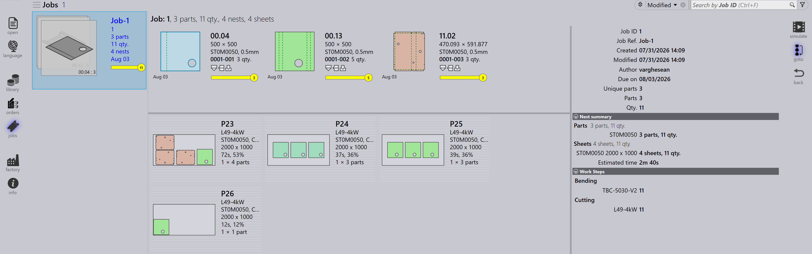

Feladatok nézet
Ez a szakasz a Feladatok nézetben elérhető különböző nézeteket ismerteti, beleértve a Feladatok, Alkatrészek, Táblatervek, Szerkesztés, Szimuláció és Exportálás nézeteket.
Feladatok
A jobs lehetőség kiválasztása megjeleníti a szoftverben jelenleg beállított összes feladat listáját. Egy feladatra duplán kattintva megtekintheti annak részleteit, vagy a jobb egérgombbal kattintva további lehetőségeket érhet el.
-
A feladatok csempés nézetben jelennek meg, ahol minden feladat alapvető tulajdonságokkal jelenik meg, mint például Feladat azonosító, Feladat hivatkozás, Ügyfél neve, Összes alkatrész, Esedékesség napja, Feladat állapotsáv stb.
-
Minden feladatcsempe egymásra helyezett kártya formátumban is megjeleníti az alkatrészképeket. Az egérgörgővel végiggörgethet egy feladat összes alkatrészén.

Feladat részletei
-
Egy csempére duplán kattintva vagy a csempe kiválasztása után a Enter billentyűt lenyomva a nézet Részletes módra vált.
-
A részletek oldal megjeleníti az alkatrészlistát a táblásított lemeztáblákkal (elrendezésekkel) együtt, ha vannak.
-
A Fel/Le nyílbillentyűkkel válthat a feladatok között a részletek oldalon.
-
Az egérgörgőt az alkatrészhalmaz fölött görgetve kiemeli az alkatrészt mind az alkatrészlistában, mind az elrendezésekben.
-
Egy elrendezés kiválasztása kiemeli az elrendezést és az összes rajta táblásított alkatrészt az alkatrészlistában. A kiemelések egy perc után automatikusan kikapcsolnak.

-
Nest summary:
-
Parts: Megjeleníti a megrendelési tételek teljes számát és a feladat teljes mennyiségét.
-
Sheets: Megjeleníti a táblásított lemeztáblák teljes számát a teljes lemeztábla-mennyiséggel együtt.
-
-
Work Steps:
-
Bending: Megjeleníti a hozzárendelt gépet és a feldolgozandó megrendelési mennyiséget.
-
Cutting: Megjeleníti a hozzárendelt gépet és a feldolgozandó megrendelési mennyiséget.
-
Prioritás
-
Először kattintson a képernyő bal oldalán a Feladatok ikonra, válassza ki a szerkeszteni kívánt feladatot, majd kattintson a képernyő jobb oldalán a szerkesztés elemre (győződjön meg róla, hogy a Feladatok lehetőség ki van választva).
-
Alternatívaként kattintson a jobb egérgombbal a kiválasztott feladatra, majd kattintson a Check-out the document for editing ikonra.
-
Amikor a szerkesztés elemre kattint, megjelenik a feladat szerkesztése ablak. Ebben az ablakban beállíthatja vagy módosíthatja a feladat prioritását.

-
A feladat alkatrészének prioritása alapján a feladatcsempében lévő feladat hivatkozás ennek megfelelően színnel árnyékolódik.
-
A feladat alkatrészei először prioritás, majd esedékesség szerint vannak rendezve. Prioritásuknak megfelelően is színnel árnyékolódnak.
-
Táblásításkor először az Urgent (sürgős) alkatrészek kerülnek figyelembe vételre, ezt követik a High (magas), majd a Normal (normál), végül a Low (alacsony) prioritású alkatrészek kerülnek elhelyezésre a lemeztáblák fennmaradó helyén.
-
A táblatervek is prioritás szerint vannak rendezve és színnel árnyékolva.
| Feladat prioritása | Szín leírása |
|---|---|
|
Sürgős |
|
Normál |
|
Magas |
|
Alacsony |


Állapot
-
A Feladat állapotsáv színkódokat használ a feladat előrehaladásának vagy állapotának jelzésére a feldolgozott vagy fennmaradó mennyiség alapján.
-
A feladaton belüli alkatrészek és a táblatervek is megfelelő színekkel vannak kiemelve, hogy tükrözzék az egyedi állapotukat a teljes feladaton belül.
-
A színkódolás javítja a nyomon követhetőséget, és biztosítja, hogy a kezelők egy pillantással láthassák a gyártási állapotot.
| Feladat állapota | Leírás |
|---|---|
|
Not ready |
|
Nesting |
|
Ready |
|
Hajlítás tervezve |
|
Sheet missing |
|
Bending queue |
|
Cutting Queue |
|
Done(Completed) |


Alkatrészek
Az Aktív alkatrészek nézet megjeleníti az összes olyan alkatrészt, amely jelenleg feldolgozás alatt áll az aktív feladatokban.
Minden alkatrész csempeként jelenik meg, amely olyan kulcsfontosságú részleteket mutat, mint az alkatrész neve, méretei, anyaga, vastagsága, mennyisége és esedékessége. Az alkatrész vizuális előnézete is megjelenik.
Ez a nézet segít a felhasználóknak nyomon követni az egyes alkatrészek feldolgozási állapotát és a folyamatban lévő feladatokban való előrehaladásukat.
Táblatervek
Az Aktív táblatervek nézet megjeleníti az összes olyan táblatervet, amely jelenleg feldolgozás alatt áll az aktív feladatokban.
Minden táblaterv releváns részletekkel jelenik meg, mint például az alkatrészek száma és a feldolgozási állapot. A táblásított alkatrészek vizuális elrendezése is megjelenik.
Ez a nézet segít a felhasználóknak nyomon követni a táblásítás előrehaladását, és azt, hogyan vannak elrendezve és feldolgozva az alkatrészek a lemeztáblákon.
Szerkesztés
A Szerkesztés lehetőség lehetővé teszi a kiválasztott elem módosítását.
A jelenlegi nézettől függően a kiválasztott példány szerkesztésre nyílik meg:
-
A Feladatok nézetben a kiválasztott feladat nyílik meg szerkesztésre.
-
Az Aktív alkatrészek nézetben a kiválasztott alkatrész nyílik meg szerkesztésre.
-
Az Aktív táblatervek nézetben a kiválasztott táblaterv nyílik meg szerkesztésre.
CSV exportálása
Az Exportálás lehetőség lehetővé teszi a feladatinformációk kiválasztását és CSV-fájlba exportálását.
-
Kattintson a feladatok ikonra.
-
Kattintson az exportálás lehetőségre a képernyő jobb oldalán.
-
Megjelenik egy párbeszédablak, amely az elérhető mezőket mutatja:
-
Jelölje be az exportálni kívánt mezők jelölőnégyzeteit.
-
Használja a Group By lehetőséget, ha az adatokat egy kiválasztott mező szerint szeretné csoportosítani.
-
Kattintson az Exportálás gombra a CSV-fájl létrehozásához.
További információk
A képernyő jobb oldalán további három ikon is található, ezek a Simulate, Goto és Back.
-
A Szimuláció megnyitja a kiválasztott elemet részletesebb megtekintésre.
-
A Goto átváltja a fókuszt és a megjelenítést a kiválasztott alkatrészre vagy táblatervre.
-
A Back egy szinttel visszalép onnan, ahol jelenleg tartózkodik, például a Back elemre kattintva szimuláció közben visszavezet a fő feladathoz, egy feladatból pedig visszavezet a fő feladatok megjelenítéséhez.